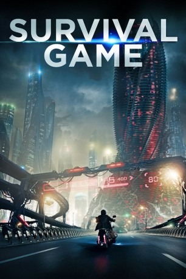

Alternativ: Mafiya: Igra na vyzhivanie gesehen am 18.06.2016
gesehen am 18.06.2016
 
 IMDB-Wertung: 4.9 / 10
IMDB-Wertung: 4.9 / 10  Metascore:
Metascore: 
Das Fernsehprogramm reißt in der fernen Zukunft kaum mehr einen Zuschauer vom Hocker. Langweilig sind die immer gleichen Formate und sich wieder und wieder wiederholenden Sendungen. Das Publikum ist bereits abgestumpft und verlangt nach neuen spektakulären Kicks. Also wird Mafia ins Leben gerufen. Dahinter verbirgt sich eine tödliche Live-Action-Gameshow, welche die Quoten wieder in die Höhe treiben soll. Elf Kandidaten treten gegeneinander an und ihr Einsatz könnte nicht höher sein: Denn nur einer überlebt das Spiel. Vor laufenden Kameras und den Augen der ganzen Welt stellen sich die Teilnehmer ihren schrecklichsten Albträumen… bis nur noch einer übrig bleibt.
Jahr: 2016
Dauer: undefiniert Minuten
FSK: 16
Land: Russland Studio: Capelight PicturesTonspuren:
Untertitel: Deutsch,
Auflösung: 1080p (1920x808) Größe: 4167 MB
Genre: Action, Thriller, Sci-Fi
Regisseur: Sarik Andreasyan
Drehbuch: Jon Hurwitz
Soundtrack:
Darsteller:
Datei: X:\2016(N-Z)\Survival Game (2016, FSK, 1920x808) 3D.mkv seit 23.05.2016
Festplatte: HD 2016(A-Z)
 Es gibt insgesamt 182 Filme in der Gruppe '2016(N-Z)'
Es gibt insgesamt 182 Filme in der Gruppe '2016(N-Z)'